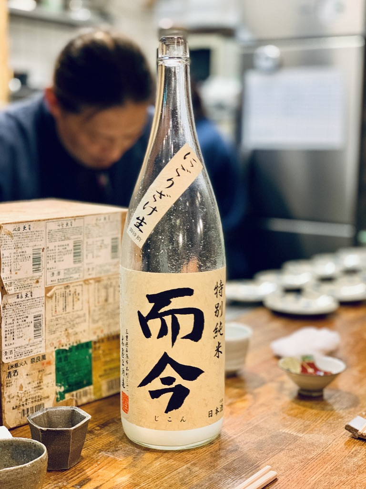
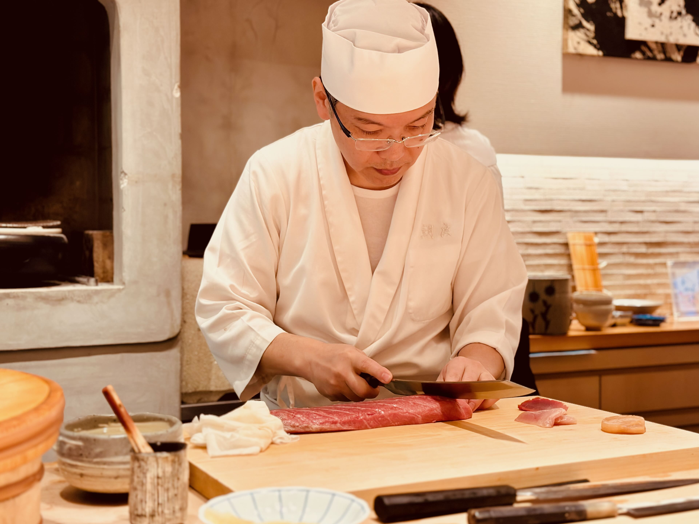
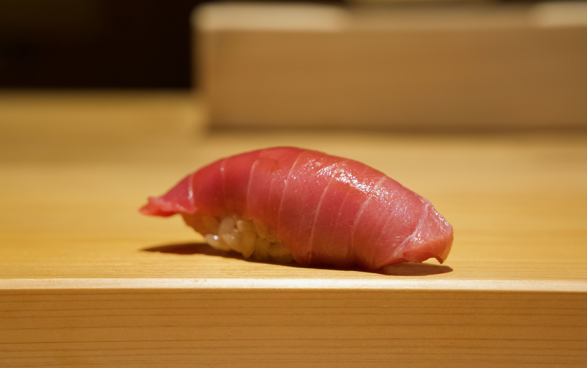
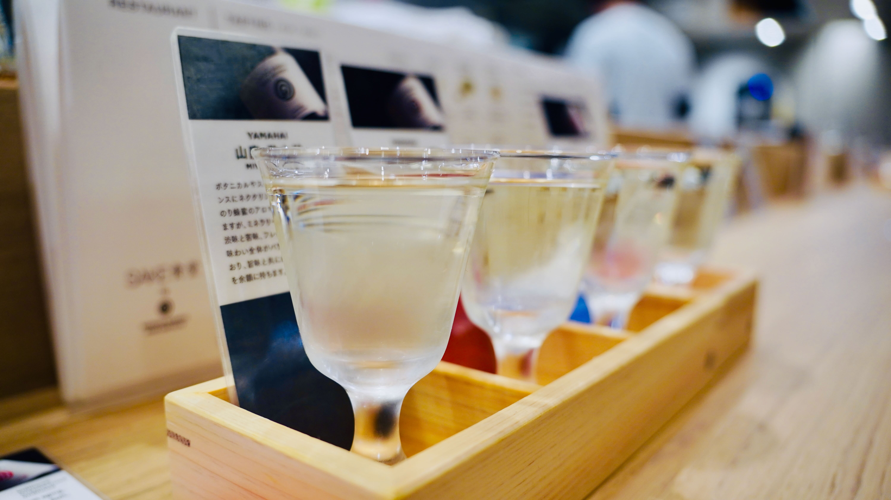
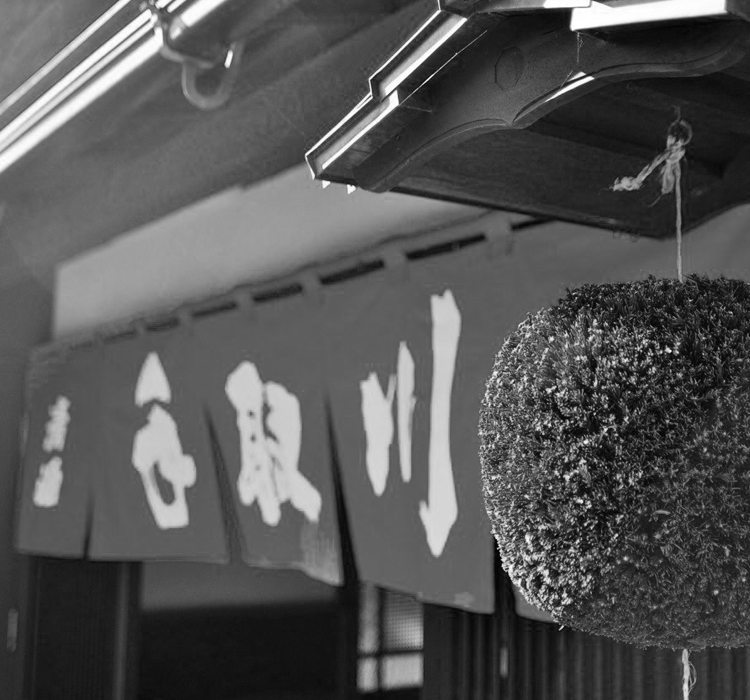
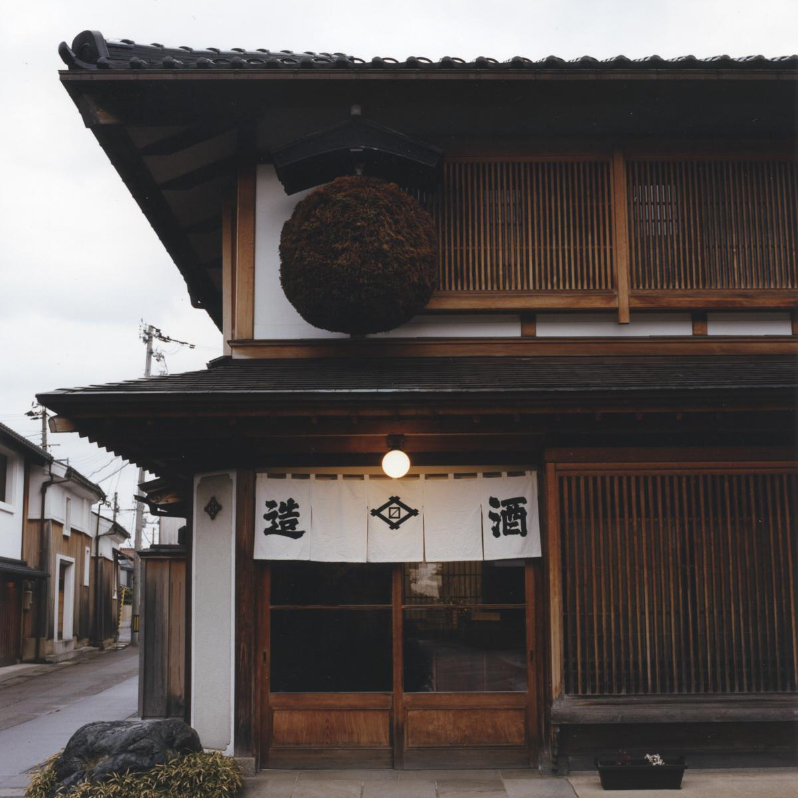

SAKEYŌ
Japan
Where to next.
The places you've saved from stories. Filter by region or type.
By Type
14 places
Recently saved

Sake Bar · Ishikawa
Kanazawa Shu Shu
From Kanazawa Shu Shu by Brad Brown

Izakaya · Tokyo
Okagesan
From Okagesan kept the Michelin star

Sushi · Ishikawa
Sushi Kinari
From 24 hours in Kanazawa

Ramen · Ishikawa
Shizenha Kagura
From 24 hours in Kanazawa

Tasting Room · Ishikawa
Noguchi Naohiko Tasting Booth
From 24 hours in Kanazawa

Brewery · Ishikawa
Tedorigawa Brewery
From The Birth of Saké film notes

Sake Shop · Tokyo
Hasegawa Saketen
From Tokyo's best bottle shops

Sake Bar · Tokyo
Kuri
From Ginza after 9
[ FUKU ]
Brewery · Ishikawa
Fukumitsuya
From Kanazawa's oldest kura

Tasting Room · Niigata
Ponshukan
From The Niigata sake corridor

Pottery · Fukui
Iso Kiln
From Vessels for sake

Brewery · Toyama
Masuda Sake Brewing
From Masuizumi: a kura with three kinds of water
14 places · sorted by recently saved